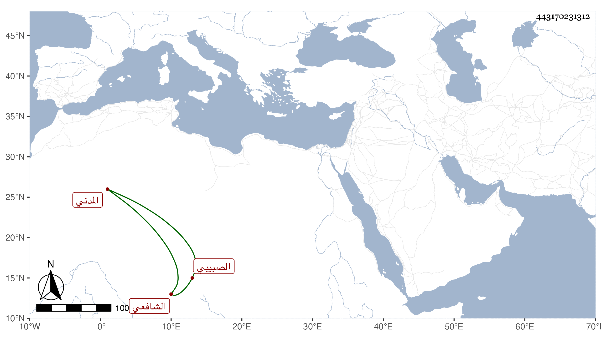

0902Sakhawi.DawLamic.ITO20230111-ara1.EIS1600.443170231312
Biography ID: 443170231312
263
محمد بن محمد بن عبد الرحمن بن محمد بن أبي بكر أبو الحرم بن الشمس الصبيبي المدني الشافعي أخو أحمد الماضي وأبوهما وجد الشمس محمد بن فتح الدين ابن تقي لأمه . قرأ البخاري بالروضة على أبيه في سنة ست وثمانمائة وعلي الجمال الكازروني في سنة إحدى عشرة وبه انتفع ، وكان صهره أبو الفتح بن تقي يرجحه على أخيه ووصف بالفقيه الفاضل . وله نظم رأيت منه تخميس البردة .
